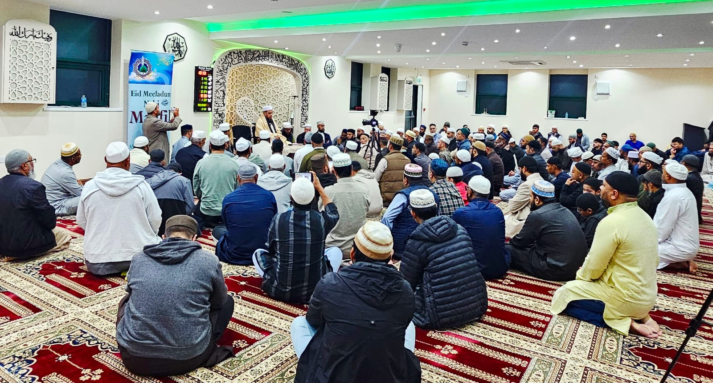

YOUR DAILY PRAYER COMPANION
Make time
for prayer.
View beginning and jamaat times, or download a beautifully formatted monthly timetable.
Times shown in 24-hour format. Maghrib begins at the time listed for Maghrib jamaat in the supplied timetable.
November and December 2026 timetables will be added when provided.
